소방시설관리사 (2018-04-28 기출문제)
1과목: 방안전관리론
1. 다음에서 설명하는 용어는?
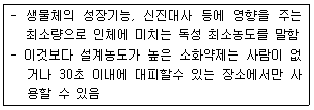
- ODP
- GWP
- NOAEL
- LOAEL
(정답률: 60%)

2. 전기화재의 원인과 주된 방지대책의 연결이 옳지 않은 것은?
- 낙뢰 - 피뢰설비
- 정전기 - 방진설비
- 스파크 - 방폭설비
- 과전류 - 적정용량의 배선 및 차단기 설치
(정답률: 61%)
3. 연소현상에서 역화(Back fire)의 원인으로 옳지 않은 것은?
- 분출 혼합가스의 압력이 비정상적으로 높을 때
- 분출 혼합가스의 양이 매우 적을 때
- 연소속도보다 혼합가스의 분출속도가 느릴 때
- 노즐의 부식 등으로 분출구가 커질 때
(정답률: 54%)
4. 폭발의 종류와 해당 물질의 연결이 옳지 않은 것은?
- 분해폭발 - 아세틸렌
- 증기폭발 - 염화비닐
- 분진폭발 - 석탄가루
- 중합폭발 - 시안화수소
(정답률: 55%)
5. 다음에 제시된 가연성기체의 폭발한계범위에서 위험도가 낮은 것부터 높은 순으로 바르게 나열한 것은?
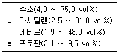
- ㄷ＜ㄱ＜ㄹ＜ㄴ
- ㄷ＜ㄹ＜ㄴ＜ㄱ
- ㄹ＜ㄱ＜ㄷ＜ㄴ
- ㄹ＜ㄷ＜ㄴ＜ㄱ
(정답률: 57%)
6. 국내의 A급화재, B급화재, C급화재, D급 화재를 표시색과 가연물에 따름 화재분류로 바르게 연결한 것은?
- A급화재 - 적색화재 - 일반화재
- B급화재 - 백색화재 - 유류화재
- C급화재 - 청색화재 - 전기화재
- D급화재 - 황색화재 - 급속화재
(정답률: 62%)
7. 화재 소화방법 중 자유 라디칼(Free radical) 생성과 관계되는 것은?
- 냉각소화
- 제거소화
- 질식소화
- 억제소화
(정답률: 60%)
8. 폭굉(Detonation)에 관한 설명으로 옳지 않은 것은?
- 화염전파속도가 음속보다 빠르다
- 온도상승은 충격파의 압력에 비례한다
- 화재전파의 연속성을 갖는다
- 폭굉파를 형성하여 물리적인 충격에 의한 피해가 크다
(정답률: 49%)
9. 건축법령상 요양병원의 피난층 외의 층에 성치하여야 하는 시설에 해당하지 않는 것은?
- 각 층마다 별도로 방화구획된 대피공간
- 발코니의 바닥에 국토교통부령으로 정하는 하향식 피난구
- 계단을 이용하지 아니하고 건물 외부 지표면 또는 인접 건물로 수평으로 피난할 수 있도록 설치하는 구름다리 형태의 구조물
- 거실에 직접 접속하여 바깥 공기에 개방된 피난용 발코니
(정답률: 43%)
10. 건축물의 연소확대 방지를 위한 구획방법으로 옳지 않은 것은?
- 일정한 면적마다 방화구획을 함으로써 화재규모를 가능한 한 작은 범위로 줄이고 피해를 최소한으로 한다
- 외벽의 개구부에는 내화구조의 차양, 발코니 등을 설치하지 않는 것이 바람직하며, 고온의 화기가 상부로 올라가도록 구획 한다
- 건축물을 수직으로 관통하는 부분은 다른 층으로 화재가 확산되지 않도록 구획 한다
- 복합건축물에서 화재위험을 많이 내포하고 있는 공간을 그 밖의 공간과 구획하여 화재 시 피해를 줄인다
(정답률: 67%)
11. 내화건축물의 화재 특성으로 옳지 않은 것은?
- 공기의 유입이 불충분하여 발염연소가 억제된다
- 열이 외부로 방출되는 축적되는 것이 많다
- 저온장기형의 특성을 나타낸다
- 목조건축물에 비해 밀도가 낮기 때문에 초기에 연소가 빠르다
(정답률: 62%)
12. 건축물의 피난ㆍ방화구조 등의 기준에 관한 규칙상 건축물의 출입구에 설치하는 회전문의 설치기준으로 옳지 않은 것은?
- 계단이나 에스컬레이터로부터 1.5미터 이상의 거리를 둘 것
- 출입에 지장이 없도록 일정한 방향으로 회전하는 구조로 할 것
- 회전문의 회전속도는 분당회전수가 8회를 넘지 아니하도록 할 것
- 자동회전문은 충격이 가하여지거나 사용자가 위험한 위치에 있는 경우에는 전자감지장치 등을 사용하여 정지하는 구조로 할 것
(정답률: 50%)
13. 건축물 실내화재에서 화재성상에 영향을 주는 주된 요인으로 옳지 않은 것은?
- 인접실의 크기
- 실의 개구부 위치 및 크기
- 실의 넓이와 모양
- 화원의 위치와 크기
(정답률: 64%)
14. 바닥 면적이 200m2인 창고에 의류 1,000㎏, 고무제품 2,000㎏이 적재되어 있는 경우 완전 연소되었을 때 화재하중은 약 몇 ㎏/m2 인가? (단, 의류, 고무, 목재의 단위발열량은 각각 5,000 ㎉/㎏, 9,000 ㎉/㎏, 4,500 ㎉/㎏이다.)
- 15.56
- 20.56
- 25.56
- 30.56
(정답률: 52%)
15. 열전달의 형태에 관한 설명으로 옳지 않은 것은?
- 전도는 열이 직접 접촉하여 전달되는 것이다.
- 대류는 유체의 흐름으로 열이 이동하는 현상이다
- 비화는 화재의 이동경로, 연소 확산에 영향을 미치지 않는다.
- 복사는 진공상태에서 손실이 없으며, 복사열은 일직선으로 이동한다.
(정답률: 63%)
16. 다음에서 설명하는 용어는?
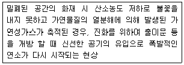
- 롤오버(Roll over)
- 백드래프트(Back draft)
- 보일오버(Boil over)
- 슬롭오버(Slop over)
(정답률: 62%)
17. 분진폭발에 영향을 미치는 요소에 관한 설명으로 옳지 않은 것은?
- 분진의 입자가 작고 밀도가 작을수록 표면적이 크고 폭발하기 쉽다
- 분진의 발열량이 크고 휘발성이 클수록 폭발하기 쉽다
- 분진의 부유성이 클수록 공기 중에 체류하는 시간이 긴 동시에 위험성도 커진다
- 분진의 형상과 표면의 상태에 관계없이 폭발성은 일정하다
(정답률: 65%)
18. 물질 연소 시 발생되는 열에너지자원의 종류와 열원의 연결이 옳은 것을 모두 고른 것은?
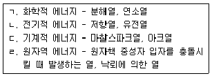
- ㄱ, ㄴ
- ㄱ, ㄹ
- ㄴ, ㄷ
- ㄴ, ㄹ
(정답률: 58%)
19. 거실제연설비의 소요배출량 27,000 m3/h, 송풍기 전압(全壓) 60mmAq, 효율 55％, 여유율 20％인 다익형 송풍기의 축동력(kW)과 본, 송풍기를 그대로 사용하고 배출량만 20％로 증가시킬 경우 회전수(rpm)는 약 얼마인가? (단, 다익형 송풍기의 초기회전수는 1,200 rpm이다)
- 축동력 6.63, 회전수 1,350
- 축동력 6.63, 회전수 1,480
- 축동력 9.63, 회전수 1,440
- 축동력 9.63, 회전수 1,450
(정답률: 48%)
20. 인간의 피난행동 특성에 관한 설명으로 옮지 않은 것은?
- 퇴피본능 : 반사적으로 위험으로 멀리하려는 본능
- 폐쇄공간지향본능 : 가능한 좁은 공간을 찾아 이동하다가 위험성이 높아지면 의외의 넓은 공간을 찾는 본능
- 지광본능 : 화재 시 연기 및 정전 등으로 시야가 흐려질 때 어두운 곳에서 개구부. 조명부 등의 밝은 빛을 따르려는 본능
- 귀소본능 : 피난 시 평소의 사용하는 문, 길, 통로를 사용하거나 자신이 왔었던 길로 되돌아가려는 본능
(정답률: 62%)
21. 피난시설계획에 관한 설명으로 옳지 않은 것은?
- 피난수단은 원식적인 방법에 의한 것을 원칙으로 한다
- 피난대책은 Fool proof 와 Fail safe의 원칙을 중시해야 한다
- 피난경로에 따라 일정한 구획을 한정하여 피난 Zone을 설정하고, 안전성을 높이도록 한다
- 피난설비는 이동식 시설에 의해야 하고, 가구식의 기구나 장치 등은 극히 예외적인 보조수단으로 생각하여야 한다
(정답률: 65%)
22. 특별피난계단의 계단실 및 부속실 제연설비의 화재안전기준상 시험, 측정 및 조정 등의 기준으로 옳은 것은?
- 제연구역의 모든 출입문등의 크기와 열리는 방향이 설계 시와 동일한지 여부를 확인하고, 동일하지 아니한 경우 급기량과 보충량 등을 다시 산출하여 조정가능여부 또는 재설계ㆍ개수의 여부를 결절할 것
- 제연구역의 출입문 및 복도와 거실(옥내가 복도와 거실로 되어 있는 경우에 한한다)사이의 출입문마다 제연설비가 작동하고 있는 상태에서 그 폐쇄력을 측정할 것
- 둘 이상의 특정소방대상물이 지하에 설치된 주차장으로 연결되어 있는 경우에는 주차장에서 둘 이상의 특정소방대상물의 제연구역으로 들어가는 출구에 설치된 제연용 연기감지기의 작동에 따라 특정소방대상물의 해당 수직풍도에 연결된 일부 제연구역의 댐퍼가 개방되도록 할 것
- 제연구역의 출입문이 일부 닫혀 있는 상태에서 제연설비를 가동시킨 후 출입문의 개방에 필요한 힘을 측정할 것
(정답률: 44%)
23. 압력 0.8MPa, 온도 20℃의 CO2 기체 10Kg 을 저장한 용기의 체적(m3)은 약 얼마인가? (단, CO2의 기체상수 R=19.26Kgㆍm/㎏ㆍK, 절대온도 273K 이다)
- 0.71
- 1.71
- 2.71
- 3.71
(정답률: 39%)
24. 자연발화 방지방법으로 옳지 않은 것은?
- 통풍을 잘 시킴
- 습도를 높게 유지
- 열의 축적을 방지
- 주위의 온도를 낮춤
(정답률: 63%)
25. 건축물 내 연기 유동의 원인을 고른 것은?
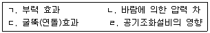
- ㄱ, ㄷ
- ㄴ, ㄹ
- ㄱ, ㄴ, ㄷ
- ㄱ, ㄴ,ㄷ, ㄹ
(정답률: 59%)
2과목: 소방수리학·약제화학 및 소방전
26. 합성계면활성제 포소화약제 2％현 원액 12L 를 사용하여 팽창율을 100이 되도록 포를 방출할 때 방출된 포의 부피(m3)는?
- 24
- 60
- 240
- 600
(정답률: 36%)
27. 이상기체 상태방정식에서 기체상수 근사값이 아닌 것은?
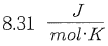
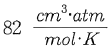
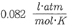
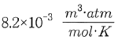
(정답률: 41%)
28. 표준상태에서 물질의 증발잠열(cal/g)이 가장 작은 것은?
- 에틸알코올
- 아세톤
- 액화질소
- 액화프로판
(정답률: 36%)
29. 1000 k에서 기체의 열용량 (
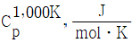
)이 가장 높은 물질에서 낮은 순서로 옳은 것은?- CO2＞H2O(g)＞N2＞He
- H2O(g)＞CO2＞N2＞He
- He＞CO2＞H2O(g)＞N2
- H2O(g)＞He＞N2＞CO2
(정답률: 35%)
30. 프로판가스 1몰이 완전연소 시 생성되는 생성물에서 질소기체가 차지하는 부피비(%)는 약 얼마인가? (단, 생성물은 모두 기체로 가정하고, 공기 중의 산소는 21 vol%, 질소는 79 vol% 이다)
- 18.8
- 22.4
- 72.9
- 79.0
(정답률: 35%)
31. 천정소화약제 소화설비의 화재안전기준(NFSC 107A)에 의한 청정소화약제의 최대허용설계농도(%)가 옳은 것을 모두 고른 것은?
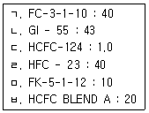
- ㄱ, ㄴ, ㄷ, ㅁ
- ㄱ, ㄷ, ㄹ, ㅁ
- ㄴ, ㄷ, ㄹ, ㅂ
- ㄴ, ㄹ, ㅁ, ㅂ
(정답률: 52%)
32. 이산화탄소 소화약제에 관한 설명으로 옳지 않은 것은?
- 이산화탄소는 연소물 주변의 산소 농도를 저하시켜 질식소화한다.
- 심부화재의 경우 고농도의 이산화탄소를 장시간 방출시켜 재발화를 방지할 수 있다
- 통신기기실, 전산기기실, 변전실 화재에 적응성이 있다
- 마그네슘 화재에 적응성이 있다
(정답률: 55%)
33. 제3종 분말소화약제의 열분해시 생성되는 오르토(ortho)인산의 화학식으로 옳은 것은?
- H3PO4
- HPO3
- H4P2O5
- H4P2O7
(정답률: 43%)
34. 다음 용어 정의에 대한 공식과 단위 연결이 옳지 않은 것은? (단, w:일, Q:전하량, t:시간, ρ:고유저항, L:길이, S:단면적)
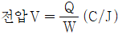
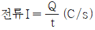
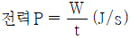
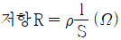
(정답률: 40%)
35. 자동제어계의 제어동작에 의한 분류 중 옳지 않은 제어방식은?
- PD 제어
- PE 제어
- PI 제어
- P 제어
(정답률: 44%)
36. 논리식
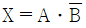
에 맞는 타임 차트는? (단, A, B는 입력, X는 출력)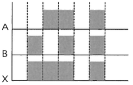
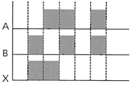
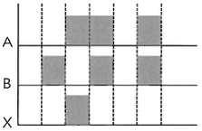
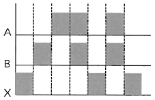
(정답률: 45%)
37. 다음 그림의 유접점 회로와 동일한 무접점 회로는?
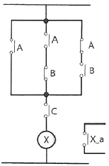
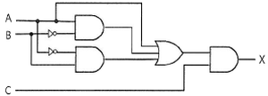
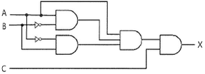
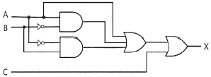
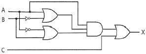
(정답률: 38%)
38. 전압 220V 저항부하 110 Ω 인 회로에 1시간 동안 전류를 흘렸을 때, 이 저항에서의 발열량(Kcal)은 약 얼마인가?
- 26
- 380
- 440
- 1,584
(정답률: 36%)
39. R-L 직렬회로의 임피던스 Z를 복소수평면상에 표현한 그림이다. 이 회로의 임피던스에 관한 설명으로 옳지 않은 것은?
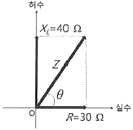
- 임피던스 Z=50∠θ
- 임피던스 Z=30 + j40
- 임피던스 위상각 θ ≒ 53.1°
- 임피던스 Z=50 (sinθ + jcosθ)
(정답률: 36%)
40. 교류전원이 인가되는 다음 R-L 직력 회로의 역률은 약 얼마인가?
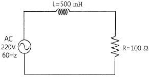
- 0.196
- 0.258
- 0.389
- 0.469
(정답률: 33%)
41. 교류 전압을 표현하는 방법 중 실효값에 해당하지 않는 것은? (단, u=Vmsinωt, Vm은 최대값)
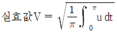
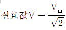
- 실효값은 동일한 저항에 직류 전원과 교류 전원을 각각 인가했을 경우 평균전력이 같아지는 때의 전압 값을 의미한다.
- 교류 220V와 380V 등은 교류전원의 실효값 전압을 의미한다.
(정답률: 39%)
42. 권선수 500회이고 자기인덕턴스가 50mH 인 코일에 2A의 전류를 흘렸을 때의 자속 (Wb)은 얼마인가?
- 1 × 10-4
- 2 × 10-4
- 3 × 10-4
- 4 × 10-4
(정답률: 49%)
43. 동일한 성능 펌프 2대를 연결하여 운용하는 경우에 관한 설명 중 옳은 것은?
- 직렬로 연결한 경우 양정이 약 2배가 된다.
- 직렬로 연결한 경우 유령이 약 4배가 된다.
- 병렬로 연결한 경우 양정이 약 2배가 된다.
- 병렬로 연결한 경우 유량이 약 4배가 된다.
(정답률: 51%)
44. 물이 지름 0.5 m 관로에 유속 2 m/s 로 흐를 때, 100m 구간에서 발생하는 손실수두(m)는 약 얼마인가? (단, 마찰손실계수는 0.019 이다.)
- 0.35
- 0.58
- 0.77
- 0.98
(정답률: 43%)
45. A 광역시 교외에 위치한 산업단지의 노후화된 물탱크 안전진단 결과 철거결정이 내려졌다. 물탱크 구조물을 해체하기 전에 탱크안의 물을 먼저 배수하여야 하는데 수위 변화에 따른 유속 및 유량이 변화할 것으로 예상한다. 물을 대기압 하의 물탱크 바닥 오리피스에서 분출시킬 때 최대유량(m3/s)은 약 얼마인가? (단, 오리피스의 지름은 5cm, 초기수위는 3m 이다)
- 0.002
- 0.0⑤
- 0.010
- 0.015
(정답률: 42%)
46. 베르누이 방정식은 완전유체를 대상으로 하며 몇 가지 제한조건을 전제로 한다. 이 제한조건에 해당하는 것은?
- 비정상 유체유동
- 압축성 유체유동
- 점성 유체유동
- 비회전성 유체유동
(정답률: 42%)
47. 물이 지름 2mm 인 원형관에 0.25cm3/s로 흐르고 있을 때, 레이놀리즈는 약 얼마인가? (단, 동점성계수 0.0112cm2/s 이다.)
- 106
- 142
- 206
- 206
(정답률: 42%)
48. 단면적 2.5 cm2, 길이 1.4m인 소방장비의 무게가 지상에서 2.75kg 일 때 물속에서의 무게(kg)는 얼마인가?
- 0.9
- 1.4
- 1.9
- 2.4
(정답률: 22%)
49. 유체의 압력 표시방법에 관한 설명으로 옳지 않은 것은?
- 계기압은 대기압 0 으로 놓고 측정하는 압력이다.
- 해수면에서 표준대기압은 약 101.3kPa 이다.
- 계기압은 절대압과 대기압의 합이다
- 이상기체 방정식에서 부피는 절대압을 사용한다.
(정답률: 50%)
50. 2개의 피스톤으로 구성된 유압잭의 작동원리에 관한 설명 중 옳지 않은 것은? (단, W:일, P:압, F:힘, A:피스톤의 단면, L:피스톤의 이동한 거리)
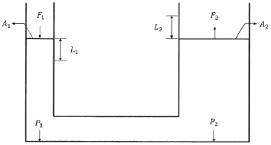
- F1＜ F2
- P1 = P2
- L1＜ L2
- W1 = W2
(정답률: 49%)
3과목: 소방관련법령
51. 소방기본법령상 국고보조 대상사업의 범위와 기준보조율에 관한 설명으로 옳은 것은?
- 국고보조 대상사업의 범위에 따른 소방활동장비 및 설비의 종류와 규격은 대통령으로 정한다
- 방화복 등 소방활동에 필요한 소방장비의 구입 및 설치는 국고보조 대상사업의 범위에 해당한다
- 소방헬리콥터 및 소방정의 구입 및 설치는 국고보조 대상사업의 범위에 해당하지 않는다.
- 국고보조 대상사업의 기준보조율은 「보조금 관리에 관한 법률 시행규칙」에서 정하는 바에 따른다.
(정답률: 40%)
52. 소방기본법령상 200만원의 벌금에 처해질 수 있는 자는?
- 화재조사를 위하여 관계 공부원이 관계 장소에 출입 시 정당한 사유 없이 출입을 방해한 자
- 정당한 사유 없이 소방대의 생활안전활동을 방해한 자
- 화재경계지구 안의 소방대상물에 대한 소방특별조사를 기피한 자
- 정당한 사유 없이 물의 사용을 방해한 자
(정답률: 37%)
53. 소방기본법령상 화재가 발생하였을 때에 화재의 원인 및 피해 등에 대한 조사를 하여야 하는 사람으로 옳지 않은 것은?
- 행정안전부장관
- 소방청장
- 소방본부장
- 소방서장
(정답률: 58%)
54. 소방시설공사업법령상 합병의 경우 소방시설업자 지위 승계를 신고하려는 자가 제출하여야 하는 서류가 아닌 것은?
- 소방시설업 합병신고서
- 합병계약서
- 합병 후 법이의 소방시설업 등록증 및 등록수첩
- 합병공고문
(정답률: 31%)
55. 소방시설공사법령상 수수료 기준으로 옳지 않은 것은?
- 전문 소방시설설계업을 등록하려는 자 - 4만원
- 소방시설업 등록증을 재발급 받으려는 자 - 2만원
- 소방시설업자의 지위승계 신고를 하려는 자 - 2만원
- 일반 소방시설공사업을 등록하려는 자 - 분야별 2만원
(정답률: 38%)
56. 소방시설공사업법령상 하도급계약심사위훤회의 구성 및 운영에 관한 설명으로 옳은 것은?
- 하도급계약심사위원회는 위원장 1명과 부위원장 1명을 제외한 10명 이내의 위원으로 구성한다
- 소방 분야 연구기관의 연구위원급 이상인 사람은 위원회의 부위원장으로 위촉될 수 있다
- 위원회의 회의는 재적위원 과반수의 출석으로 개의하고, 출석위원 3분의 2이상 찬성으로 의결한다
- 위원의 임기는 2년으로 하되, 두 차례까지 연임할 수 있다
(정답률: 30%)
57. 소방시설공사업법령상 하자보수 대상 소방시설과 하자보수 보증기간의 연결이 옳지 않은 것은?
- 피난기구 - 3년
- 자동화재탐지설비 - 3년
- 자동소화장치 - 3년
- 간이스프링클러설비 - 3년
(정답률: 46%)
58. 소방시설공사업법령상 영업정지가 그 이용자에게 불편을 주거나 그 밖에 공익을 해칠 우려가 있을 때에 시ㆍ도지사가 영업정지처분을 갈음하여 과징금을 부과할 수 있는 경우는?(오류 신고가 접수된 문제입니다. 반드시 정답과 해설을 확인하시기 바랍니다.)
- 사업수행능력 평가에 관한 서류를 위조하거나 변조하는 등 거짓이나 그 밖의 부정한 방법으로 입찰에 참여한 경우
- 동일한 특정소방대상물의 소방시설에 대한 시공과 감리를 함께 할 수 없으나 이를 위반하여 시공과 감리를 함께 한 경우
- 정당한 사유없이 관계 공부원의 출입 또는 검사ㆍ조사를 기피한 경우
- 공사감리자를 변경하였을 때에는 새로 지정된 공사감리자와 종전의 공사감리자는 감리 업무 수행에 관한 사항과 관계 서류를 인수ㆍ인계하여야 하나, 인수ㆍ인계를 기피한 경우
(정답률: 33%)
59. 화재예방, 소방시설 설치ㆍ유지 및 안전관리에 관한 법령상 특정소방대상물이 증축되는 경우는 기존 부분에 대해서는 증축 당시의 소방시설의 설치에 관한 대통령령 또는 화재안전기준을 적용하지 아니하는 경우가 있다. 이 경우에 해당하지 않는 것은?
- 기존 부분과 증축 부분이 갑종 방화문으로 구획되어 있는 경우
- 기존 부분과 증축 부분이 국토교통부장관이 정하는 기준에 적합한 자동방화셔터로 구획되어 있는 경우
- 자동차 생산공장 내부에 연면적 50제곱미터의 직원 휴게실을 증축하는 경우
- 자동차 생산공장에 3면 이상에 벽이 없는 구조의 캐노피를 설치하는 경우
(정답률: 40%)
60. 화재예방, 소방시설 설치ㆍ유지 및 안전관리에 관한 법령상 임시소방시설에 해당하지 않는 것은?
- 비상경보장치
- 간이완강기
- 간이소화기
- 간이피난유도선
(정답률: 39%)
61. 화재예방, 소방시설 설치ㆍ유지 및 안전관리에 관한 법령상 1급 소방안전관리대상물에 해당하는 것은? (단,「공공기관의 소방안전관리에 관한 규정」을 적용받는 특정소방대상물은 제외함)
- 지하구
- 철강 등 불연성 물품을 저장ㆍ취급하는 창고
- 층수가 10층이고 연면적이 1만 5천제곱미터인 판매시설
- 층수가 20층이고 지상으로부터 높이가 60미터인 아파트
(정답률: 44%)
62. 화재예방, 소방시설 설치ㆍ유지 및 안전관리에 관한 법령에 대한 설명으로 옳은 것은?
- 시ㆍ도지사는 소방시설관이업등록증(등록수첩) 재교부신청서를 제출받은 때에는 3일 이내에 소방시설업등록증 또는 등록수첩을 재교부하여야 한다
- 소방시설관리업자가 소방시설관리업을 휴ㆍ폐업한 때에는 3일 이내에 소재지를 관할하는 소방서장에게 그 소방시설괸리업등록증 및 등록수첩을 반납하여야 한다.
- 시ㆍ도지사는 소방시설관리업자로부터 소방시설관리업등록사항 변경신고를 받은 때에는 7일 이내에 소방시설관리업등록증 및 등록수첩을 새로 교부하여야 한다
- 피성년후견인이 금고 이상의 형의 빕행유예를 선고받고 그 유예기간이 종요된 경우에는 소방시설관리업의 등록을 할 수 있다
(정답률: 32%)
63. 화재예방, 소방시설 설치ㆍ유지 및 안전관리에 관한 법령상 특정소방대상물의 설명으로 옳지 않은 것은?
- 의원은 근린생활시설이다
- 보건소는 업무시설이다
- 요양병원은 의료시설이다
- 동물원은 동물 및 식물 관련 시설이다
(정답률: 43%)
64. 화재예방, 소방시설설치ㆍ유지 및 안전관리에 관한 법령상 주택용 소방시설을 설치하여야 하는 대상을 모두 고른 것은?
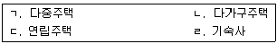
- ㄱ, ㄹ
- ㄴ, ㄹ
- ㄱ, ㄴ, ㄷ
- ㄴ, ㄷ, ㄹ
(정답률: 50%)
65. 화재예방, 소방시설 설치ㆍ유지 및 안전관리에 관한 법령상 무선통신보조설비를 설치하여야 하는 특정소방대상물에 해당하지 않는 것은? (단, 위험물 저장 및 처리 시설중 가스시설은 제외함)
- 공동구
- 지하가(터널은 제외)로서 연면적 1천 m2 이상인 것
- 층수가 30층 이상인 것으로서 11층 이상 부분의 모든 층
- 지하층의 층수가 3층 이상이고 지하층의 바닥면적의 합계가 1천 m2 이상인 것은 지하층의 모든층
(정답률: 41%)
66. 화재예방, 소방시설 설치ㆍ유지 및 안전관리에 관한 법령상 우수품질 제품에 대한 인증 및 지원에 관한 설명으로 옳은 것은?
- 우수품질인증을 받으려는 자는 대통령령으로 정하는 바에 따라 시ㆍ도지사에게 신청하여야 한다.
- 우수품질인증을 받은 소방용품에는 KS인증 표시를 한다.
- 우수품질인증의 유효기간은 5년의 범위에서 행정안전부령으로 정한다
- 중앙행정기관은 건축물의 신축으로 소방용품을 신규 비치하여야 하는 경우 우수품질인증 소방용품을 반드시 구매ㆍ사용해야 한다.
(정답률: 40%)
67. 화재예방, 소방시설 설치ㆍ유지 및 안전관리에 관한 법령상 소방본부장이 소방특별조사위원회의 위원으로 임명하거나 위촉할 수 없는 사람은?
- 소방기술사
- 소방 관련 분야의 석사학위 이상을 취득한 사람
- 과장급 직위 이상의 소방공무원
- 소방공무원 교육기관에서 소방위 관련한 연구에 3년 이상 종사한 사람
(정답률: 39%)
68. 위험물안전관리법령상 허가를 받지 아니하고 지정수랑 이사의 위험물을 저장 또는 취급하는 자에 대한 조치명령에 관한 설명으로 옳은 것은?
- 소방서장은 수산용으로 필요한 난방시설을 위한 지정수량 20배의 저장소를 설치한 자에 대하여 제거 등 필요한 조치를 명할 수 있다
- 소방본부장은 주택의 난방시설(공동주택의 중앙난방시설은 제외한다)을 위한 취급소를 설치한 자에 대하여 제거 등 필요한 조치를 명할 수 있다.
- 시ㆍ도지사는 축산용으로 필요한 난방시설을 위한 지정수량 20배의 저장소를 설치한 자에 대하여 제거 등 필요한 조치를 명할 수 있다
- 소방서장은 농예용으로 필요한 건조시설을 위한 지정수량 30배의 저장소를 설치한 자에 대하여 제거 등 필요한 조치를 명할 수 있다
(정답률: 50%)
69. 위험물안전관리법령상 기계에 의하여 하역하는 구조로 된 운반용기에 대한 수납 기준으로 옳은 것은?
- 금속제의 운반용기는 3년 6개월 이내에 실시한 운반용기의 외부의 점검 및 7년 이내의 사이에 실시한 운반용기의 내부의 점거에서 누설 증 이상이 없을 것
- 경질플라스틱제의 운반용기에 액체위험물을 수납하는 경우에는 당해 운반용기는 제조된 때로부터 7년 이내의 것으로 할 것
- 플라스틱내 용기 부착의 운반용기에 있어서는 3년 6개월 이내에 실시한 기밀시험에서 누설 등 이상이 없을 것
- 금속제의 운반용기에 액체위험물을 수납하는 경우에는 55℃의 온도에서 증기압이 130 KPa 이하가 되도록 수납할 것
(정답률: 36%)
70. 위험물안전관리법령상 안전교육의 교육대상자와 교육시기의 연결이 옳지 않은 것은?
- 안전관리자 - 신규 종사 후 3년마다 1회
- 위험물운송자 - 신규 종사 후 3년마다 1회
- 탱크시험자의 기술인력 - 신규 종사 후 6개월 이내
- 위험물운송자가 되고자 하는 자 -신규 종사 전
(정답률: 41%)
71. 위험물안전관리법령상 제 1류 위험물의 지정수량으로 옳지 않은 것은?
- 과염소산염류 - 50 킬로그램
- 브롬산염류 - 200 킬로그램
- 요오드산염류 - 300킬로그램
- 중크롬산염류 - 1,000 킬로그램
(정답률: 49%)
72. 위험물안전관리법령상 위험물시설의 설치 및 변경 등에 관한 조문의 일부이다. ( )에 들어갈 말을 바르게 나열한 것은?
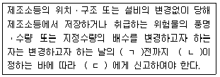
- ㄱ:1일, ㄴ:대통령령, ㄷ:소방서장
- ㄱ:1일, ㄴ:행정안전부령, ㄷ:시ㆍ도지사
- ㄱ:3일, ㄴ:대통령령, ㄷ:소방서장
- ㄱ:3일, ㄴ:행정안전부령, ㄷ:시ㆍ도지사
(정답률: 43%)
73. 다중이용업소의 안전관리에 관한 특별법령상 화재를 예방하고 화재로 인한 생명 .신체 .재산상의 피해를 방지하기 위하여 필요하다고 인정하는 경우 화재위험평가를 할 수 있는 지역 또는 건축물에 해당하는 것은?
- 3천제곱미터 지역 안에 다중이용업소가 40개 이상 밀집하여 있는 경우
- 하나의 건축물에 다중이용업소로 사용하는 영업장 바닥면적의 합계가 5백제곱미터 이상인 경우
- 5층 이상의 건축물로서 다중이용업소가 10개 이상 있는 경우
- 4천제곱미터 지역 안에 4층 이하인 건축물로서 다중이용업소가 20개 이상 밀집하여 있는 경우
(정답률: 45%)
74. 다중이용업소의 안전관리에 관한 특별법령상 관련 행정기관의 통보사항에 관한 내용으로 ()에 들어갈 말을 바르게 나열한 것은?
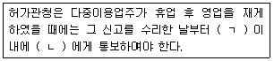
- ㄱ: 14일, ㄴ: 시ㆍ도지사
- ㄱ: 30일, ㄴ: 시ㆍ도지사
- ㄱ: 14일, ㄴ: 소방본부방 또는 소방서장
- ㄱ: 30일, ㄴ: 소방본부장 또는 소방서장
(정답률: 27%)
75. 다중이용업소의 안전관리에 관한 특별법령상 다중이용업소의 안전관리기본계획에 포함되어야 할 사항으로 옳지 않은 것은?
- 다중이용업소의 자율적인 안전관리 촉진에 관한 사항
- 다중이용업소의 화재안전에 관한 정보제계의 구축 및 관리
- 다중이용업소의 적정한 유지ㆍ관리에 필요한 교육과 기술 연구ㆍ개발
- 다중이용업주와 종업원에 대한 자체지도 계획
(정답률: 34%)
4과목: 위험물의 성상 및 시설기준
76. 물과 반응하여 수산화나트륨을 발생하는 무기과산화물은?
- 중크롬산나트륨
- 과망간산나트륨
- 과산화나트륨
- 과염소산나트륨
(정답률: 43%)
77. 제 2류 위험물에 관한 설명으로 옳은 것은?
- 적린은 황린에 비해 화학적으로 활성이 크고 공기 중에서 불안전하다
- 마그네슘 화재 시 물을 주수하면 메탄가스가 발생하여 폭발적으로 연소한다.
- 유황은 연소될 때 오산화인이 생성된다
- 철분은 상온에서 묽은 산과 반응하여 수소가스를 발생한다
(정답률: 33%)
78. 위험물안전관리법령상제 2류 위험물인 금속분에 해당되는 것은? (단, 150 마이크로미터의 체를 통과하는 것이 50중량퍼센트 미만인 것은 제외한다.)
- 칼슘분
- 니켈분
- 세슘분
- 아연분
(정답률: 45%)
79. 황린이 공기 중에서 완전 연소할 때 생성되는 물질은?
- 오산화인
- 황화수소
- 인화수소
- 이산화황
(정답률: 39%)
80. 탄화칼슘 10kg이 질소와 고온에서 모두 반응한다고 가정할 때 생성되는 칼슘시안아미드(Calcium Cyanamide)의 질량(Kg)은? (단, 원자량은 Ca는 40, C는 12, N는 14로 한다.)
- 10.3
- 12.5
- 14.4
- 25.0
(정답률: 28%)
81. 아세트알데히드에 관한 설명으로 옳지 않은 것은?
- 공기 중에서 산화되면 에틸알코올이 생성된다
- 강산화제와 접촉 시 혼촉발화의 위험성이 있다
- 인화점이 낮아 상온에서 인화히기 쉬운 물질이다.
- 구리, 은, 마그네슘과 반응하여 폭발성 물질을 생성한다.
(정답률: 47%)
82. 탄화알루미늄과 트리에틸알루미늄이 각각 물과 반응할 때 생성되는 기체는?
- 탄화알루미늄:CH4, 트리에틸알루미늄:C2H6
- 탄화알루미늄:C2H2, 트리에틸알루미늄:H2
- 탄화알루미늄:CH4, 트리에틸알루미늄:C2H4
- 탄화알루미늄:C2H6, 트리에틸알루미늄: H2
(정답률: 43%)
83. 제 4류 위험물에 관한 설명으로 옳지 않은 것은?
- 클레오소트유는 콜타르를 증류하여 제조하며 나프탈렌과 안트라센을 포함한 혼합물이다.
- 콜로디온은 용제인 에탄올과 에테르가 증발하고 나면 제6류 위험물과 같은 산화성을 나타낸다.
- 이황화탄소는 액체비중이 물보다 크며 완전연소 시 이산화황과 이산화탄소가 생성된다.
- 이소프로필알코올은 25℃ 에서 인화의 위험이 있고 증기는 공기보다 무거워 낮은 곳에 체류한다.
(정답률: 32%)
84. 트리니트로페놀에 관한 설명으로 옳지 않은 것은?
- 300℃ 이상으로 가열하면 폭발한다.
- 순수한 것은 상온에서 황색의 액체이다.
- 에탄올에 녹는다.
- 피크린산이라고도 한다.
(정답률: 38%)
85. 위험물안전관리법령상 지정수량 이상의 위험물을 운반하는 경우 질산에탈올과 함께 운반할 수 있는 것은?
- 염소산암모늄, 과망간산칼륨
- 적린, 아크릴산
- 아세톤, 황린
- 등유, 과염소산
(정답률: 27%)
86. 위험물안전관리법령상 위험물 별 지정수량과 위험등급의 연결로 옳지 않은 것은?
- 염소산칼륨, 과산화마그네슘 - 50Kg - Ⅰ등급
- 잘산, 과산화수소 - 300Kg - Ⅰ등급
- 수소화리듐, 디에틸아연 - 300Kg - Ⅲ등급
- 피크린산, 메틸히드라진 - 200Kg - Ⅱ등급
(정답률: 34%)
87. 고농도의 경우, 충격ㆍ마찰에 의해 단독으로도 폭발할 수 있으며, 분해 시 발생기 산소가 발생하는 물질은?
- 트리에틸알루미늄
- 인화칼슘
- 히드라진
- 과산화수소
(정답률: 45%)
88. 위험물안전관리법령상 위험물제조소에 옥외소화전이 5개 있을 경우 확보하여야 할 수원의 최소 수량 m3은?
- 14
- 31.2
- 54
- 67.5
(정답률: 35%)
89. 위험물안전관리법령상 위험물을 취급하는 제조소 건축물의 지붕을 내화구조로 할 수 있는 것은?
- 과염소산
- 과망간산칼륨
- 부틸리튬
- 산화프로필렌
(정답률: 32%)
90. 위험물안전관리법령상 철분을 취급하는 위험물제조소에 설치하여야 하는 주의사항을 표시한 게시판의 내용으로 옳은 것은?
- 물기주의
- 물기엄금
- 화기주의
- 화기엄금
(정답률: 28%)
91. 위험물안전관리법령상 위험물제조소의 환기설비에 관한 기준 중 다음 () 에 들어갈 내용으로 옳은 것은?
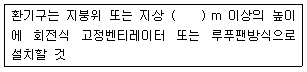
- 1
- 2
- 3
- 4
(정답률: 45%)
92. 위험물안전관리법령상 위험물제조소와 인근 건축물 등과의 안전거리가 다음 중 가장 긴 것은? (단, 제6류 위험물을 취급하는 제조소를 제외한다.)
- 「초ㆍ중등교육법」에 정하는 학교
- 사용전압이 35,000V를 초과하는 특고압가공전선
- 「도시가스사업법」의 규정에 가스공급시설
- 「문화재보호법」의 규정에 의한 기념물 중 지정문화재
(정답률: 47%)
93. 위험물안전관리법령상 지하탱크저장소의 기준에 관한 설명으로 옳은 것은? (단. 이중벽탱크와 특수누설방지구조는 제외한다.)
- 지하저장탱크의 윗부분은 지면으로부터 0,5m 이상 아래에 있어야 한다.
- 지하저장탱크와 탱크전용실의 안쪽과의 사이는 5cm 이상의 간격을 유지하도록 한다.
- 지하저장탱크는 용량이 1,500 L 이하일 때 탱크의 최대 직경은 1,067mm, 강철판의 최소두께는 4.24mm로 한다.
- 철근콘크리트 구조인 탱크전용실의 벽. 바닥 및 뚜껑은 두께 0.3m 이상으로 하고 그 내부에는 직경 9mm부터 13mm까지의 철근을 가로 및 세로로 5cm 부터 20cm까지의 간격으로 배치한다.
(정답률: 36%)
94. 위험물안전관리법령상 이동탱크저장소의 기준에 관한 설명으로 옳은 것을 모두 고름 것은?
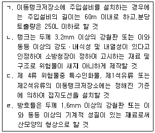
- ㄱ, ㄹ
- ㄴ, ㄷ
- ㄱ, ㄷ, ㄹ
- ㄱ, ㄴ, ㄷ, ㄹ
(정답률: 43%)
95. 위험물안전관리법령상 옥외탱크저장소 탱크 주위에 설치하는 방유제의 설치기준 중 () 에 들어갈 내용으로 옳게 나열된 것은?
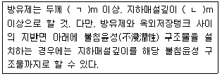
- ㄱ:0.1, ㄴ: 0.5
- ㄱ:0.1, ㄴ.1.0
- ㄱ:0.2, ㄴ:0.5
- ㄱ:0.2, ㄴ.1.0
(정답률: 34%)
96. 위험물안전관리법령상 위험물저장소의 전축물 외벽이 내화구조이고 연면적이 900 m2인 경우, 소화설비의 설치기준에 의한 소화설비 소요단위의 계산값은?
- 6
- 9
- 12
- 18
(정답률: 30%)
97. 위험물안전관리법상 옥외저장소에 저장할 수는 없는 위험물을 모두 고름 것은? (단, 국제해상위험물규칙에 적합한 용기에 수납된 경우와 「관세법」상 보세구역안에 저장하는 경우는 제외한다)
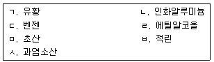
- ㄱ, ㄹ, ㅅ
- ㄴ, ㄷ, ㅂ
- ㄴ, ㅁ, ㅂ
- ㄷ, ㅁ, ㅅ
(정답률: 36%)
98. 위험물안전관리법령상 제 1종 판매취급소의 위험물을 배합하는 실에 관한 기준으로 옳은 것은?
- 바닥면적은 6 m2 이상 15 m2이하로 할 것
- 방화구조 또는 난연재료로 된 벽으로 구획할 것
- 출입구 문턱의 높이는 바닥면으로부터 5cm 이상으로 할 것
- 출입구에는 수시로 열 수 있는 자동폐쇄식의 을종방화문을 설치할 것
(정답률: 36%)
99. 위험물안전관리법령상 이송취급소에 관한 기준 중 ( ) 에 들어갈 내용으로 옳은 것은?
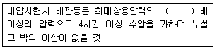
- 1
- 1.1
- 1.25
- 1.5
(정답률: 31%)
100. 위험물안전관리법령상 주유취급소의 담 또는 벽의 일부분에 방화상 유효한 구조의 유리를 부착할 때 설치기준으로 옳지 않은 것은?
- 하나의 유리판의 가로의 길이는 2m 이내일 것
- 주유취급소 내의 지반면으로부터 70cm를 초과하는 부분에 한하여 유리를 부착할 것
- 유리를 부착하는 범위는 전체의 담 또는 벽의 길이의 10분의 3을 초과하지 아니할 것
- 유리를 부착하는 위치는 주입구, 고정주유설비 및 고정급유설비로부터 4m 이상 이격될 것
(정답률: 32%)
5과목: 소방시설의 구조원리
101. 소화기구 및 자동소화장치의 화재안전기준상 상업용 주방자동소화장치의 설치기준이 아닌 것은?
- 소화장치는 조리기구의 종류 별로 성능인증 받은 설계 매뉴얼에 적합하게 설치 할 것
- 감지부는 성능인증 받는 유효높이 및 위치에 설치할 것
- 차단장치(전기 또는 가스)는 상시 확인 및 점검이 가능하도록 설치할 것
- 수신부는 주위의 열기류 또는 습기 등과 주위온도에 영향을 받지 아니하고 사용자가 상시 볼 수 있는 장소에 설치할 것
(정답률: 37%)
102. 펌프의 제원이 전양정 50m, 유량 6 m3/min, 4극 유도전동기, 60 Hz, 슬립 3% 일 때, 비속도는 약 얼마인가?
- 210.11
- 214.60
- 227.45
- 235.31
(정답률: 25%)
103. 무선통신보조설비의 화재안전기준상( )에 들어갈 내용으로 옳게 묶인 것은?
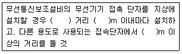
- 수평, 300, 5
- 보행, 100, 3
- 수평, 100, 3
- 보행, 300, 5
(정답률: 42%)
104. 특별피난계단의 계단실 및 부속실 제연설비의 화재안전기준상 제연구획에 대한 급기 기준으로 옳지 않은 것은?
- 계단실 및 부속실을 동시에 제연하는 경우 계단실에 대하여는 그 부속실의 수직풍도를 통해 급기할 수 있다
- 하나의 수직풍도마다 전용의 송풍기로 급기할 것
- 부속실을 제연하는 경우 동일수직선상에 2대 이상의 급기송풍기가 설치되는 경우에는 수직풍도를 분리하여 설치할 수 있다
- 계단실을 제연하는 경우 전용수직풍도 설치하거나 부속실에 급기풍도를 직접 연결하여 급기하는 방식으로 할 것
(정답률: 29%)
1⑤. 연결송수관설비의 화재안전기준상 배관 등의 설치기준으로 옳지 않은 것은?
- 지상 11층 이상인 특정소방대상물에 있어서는 습식설비로 할 것
- 주배관의 구경은 100mm 이상의 것으로 할 것
- 연결송수관설비의 배관은 주배관의 구경이 100mm 이상인 옥내소화전설비ㆍ스프링클러설비 또는 물분무등소화설비의 배관과 겸용할 수 있다
- 배관 내 사용압력이 1.2MPa이상일 경우에는 일반배관용 스테인리스강관(KS D 3595) 또는 배관용 스테인리스강관(KS D 3576)을 사용한다.
(정답률: 42%)
106. 소방시설용 비상전원수전설비의 화재안전기준상 다음 설명에 해당하는 용어는?
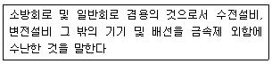
- 공용 큐비클식
- 공용 배전반
- 공용 분전반
- 전용 큐비클식
(정답률: 37%)
107. 연결살수설비의 화재안전기준상 () 에 들어갈 내용으로 옳게 묶인 것은?
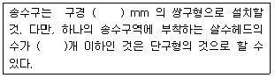
- 40.3
- 40.10
- 65.10
- 100.20
(정답률: 49%)
108. 4단 펌프의 수평 회전축 소화펌프를 운전하면서 물의 압력을 측정하였더니 흡입측 압력이 0.09 MPa, 토출측 압력이 0.98MPa 이었다. 이 펌프 1단의 임펠러에 가해지는 토출압력은(MPa)은 약 얼마인가?
- 0.13
- 0.16
- 0.19
- 0.21
(정답률: 28%)
109. 피난기구의 화재안전기준의 설치장소별 피난기구 적응성에서 4층 이상 10층 이하의 노유자시설에 설치할 수 있는 피난기구로 묶인 것은?
- 구조대, 미끄럼대
- 피난교, 승강식피난기
- 구조대, 승강식피난기
- 피난교, 완강기
(정답률: 38%)
110. 유도등 및 유도표지의 화재안전기준상 축광식 피난유도선의 설치기준에 관한 설명으로 옳지 않은 것은?
- 바닥으로부터 높이 50cm 이하의 위치 또는 바닥 면에 설치할 것
- 구획된 각 실로부터 주출입구 또는 비상구까지 설치할 것
- 피난유도 표시부는 1m 이내의 간격으로 연속되도록 설치 할 것
- 외광 또는 조명장치에 의하여 상시 조명이 제공되거나 비상조명등에 의한 조명이 제공되도록 설치 할 것
(정답률: 42%)
111. 자동화재탐지설비 및 시각경보장치의 화재안전기준상 다음 조건을 만족하는 소방대상물의 최소 경계구역 수는?
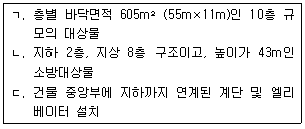
- 12개
- 21개
- 23개
- 24개
(정답률: 36%)
112. 자동화재탐지설비 및 시각경보장치의 화재안전기준상 다음 조건에서 설명하고 있는 감지기는?
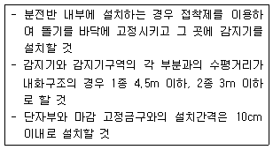
- 정온식감지선형
- 열전대식 차동분포형
- 광전식분리형
- 열연복합형
(정답률: 41%)
113. 스프링클러설비가 설치된 복합건축물로서 배관 길이 80m, 관경 100 mm, 마찰손실계수 0.03인 배관을 통해 높이 60m 까지 소화수를 공급할 경우, 펌프의 이론 소요동력(kW)은 약 얼마인가? (단, 펌프효율 : 0.8.전달계수: 1.15, 중력가속도 : 9.8m/s2, 헤드의 방수압 : 10mAq, π : 3.14, 헤드는 표준형이다.)
- 47.28
- 52.28
- 57.28
- 62.28
(정답률: 29%)
114. 비상콘센트설비의 화재안전기준상 전원 및 콘센트 등 설치기준으로 옳지 않은 것은?
- 지하층을 포함한 층수가 7층 이상으로 연면적 2,000m2 이상인 소방대상물에 설치하는 비상콘센트설비는 자가발전설비를 비상전원으로 설치한다.
- 하나의 전용회로에 설치하는 비상콘센트는 10개 이하로 할 것
- 비상콘센트용의 풀박스 등은 방청도장을 한 것으로서, 두께 1.6mm 이상의 철판으로 할 것
- 비상콘센트설비의 전원회로는 단상교류 220V 인 것으로서, 그 공급용량은 1.5kVA 이상인 것으로 할 것
(정답률: 44%)
115. 자동화재탐지설비 및 시각경보장치의 화재안전기준상 광전식분리형감지기의 설치 기준으로 옳은 것은?
- 광축은 나란한 벽으로부터 0.6m 이상 이격하여 설치할 것
- 광축의 높이는 천장 등 높이의 60% 이상으로 할 것
- 감지기의 송광부와 수광부는 설치된 뒷벽으로부터 30cm 이내 위치에 설치할 것
- 감지기의 수평면은 햇빛이 잘 비추는 곳으로 놓이도록 설치할 것
(정답률: 40%)
116. 자동화재탐지설비 및 시각경보장치의 화재안전기준상 수신기 설치기준으로 옳은 것은?
- 6층 이상의 소방대상물에는 발신기와 전화통화가 가능한 수신기를 설치할 것
- 수신기는 감지기, 중계기 또는 발신기가 작동하는 경계구역을 표시할 수 있는 것으로 설치할 것
- 하나의 경계구역은 여러 개 표시등으로 표시하여 공동감시가 가능토록 설치할 것
- 실내면적이 50m2 이상으로 열이나 연기 등으로 인하여 감지기가 일시적인 화재신호를 발신할 우려가 있는 경우에는 축적기능이 있는 수신기를 설치할 것
(정답률: 47%)
117. 포소화설비의 화재안전기준상 포헤드 및 고정포방출구 설치기준으로 옳지 않은 것은?
- 포헤드의 1분당 바닥면적 1 m2당 방사량으로 차고ㆍ주차장에 합성계면활성제포 소화약제 6.5ℓ 이상
- 포헤드 및 고정포방출구의 팽창비가 20 이하인 경우에는 포헤드 압축공기 포헤드를 사용한다
- 포워터스프링클러헤드는 특정소방대상물의 천장 또는 반자에 설치하되, 바닥면적 8m2마다 1개 이상으로 하여 해당 방호대상물의 화재를 유효하게 소화할 수 있도록 할 것
- 포헤드는 특정소방대상물의 천장 또는 반자에 설치하되, 바닥면적 9 m2 마다 1개 이상으로 하여 해당 방호대상물의 화재를 유효하게 소화할수 있도록 할 것
(정답률: 40%)
118. 소방시설의 내진설계기준에서 규정하고 있는 배관의 내진설계 기준으로 옳지 않은 것은?
- 건물의 지진분리이음이 설치된 위치의 배관에는 직경과 상관없이 지진분리장치를 설치하여야 한다
- 배관에 대한 내진설계를 실시할 경우 지진분리이음은 배관의 수량ㆍ수직 지진하중을 산정하여야 한다.
- 배관의 변형을 최소화하고 소화설비 주요 부품사이의 유연성을 증가시킬 수 있는 것으로 설치하여야 한다
- 버팀대와 고정장치는 소화설비의 동작 및 살수를 발해하지 않아야 한다
(정답률: 27%)
119. 스프링클러설비의 화재안전기준상 폐쇄형스프링클러설비의 방호구역ㆍ유수검지장치의 기준으로 옳지 않은 것은?
- 자연낙차에 따른 압력수가 흐르는 배관 상에 설치된 유수검지장치는 화재시 물의 흐름을 검지할 수 있는 최대한의 압력이 얻어질 수 있도록 수조의 상단으로부터 낙차를 두어 설치할 것
- 하나의 방호구역에는 1개 이상의 유수검지장치를 설치하되, 화재발생시 접근이 쉽고 점검하기 편리한 장소에 설치할 것
- 스프링클러헤드에 공급되는 물은 유수검지장치를 지나도록 할 것. 다만, 송수구를 퉁하여 공급되는 물은 그러하지 아니하다.
- 조기반응형 스프링클러헤드를 설치하는 경우에는 습식유수검지장치 또는 부압식 스프링클러설비를 설치할 것
(정답률: 40%)
120. 미분무소화설비의 화재안전기준상 헤드의 설치기준으로 옳지 않은 것은?
- 미분무헤드는 설계도면과 동일하게 설치하여야 한다.
- 미분무헤드는 소방대상물의 천장ㆍ반자ㆍ천장과 반자사이ㆍ덕트ㆍ선반 기타 이와 유사한 부분에 설계자의 의도에 적합하도록 설치하여야 한다
- 미분무소화설비에 사용되는 헤드는 개방형 헤드를 설치하여야 한다
- 미분무헤드는 배관, 행거 등으로부터 살수가 방해되지 아니하도록 설치하여야 한다.
(정답률: 49%)
121. 간이스프링클러설비의 화재안전기준상 상수도 직결형의 배관 및 밸브 설치순서로 옳은 것은?
- 수도용계량기, 급수차단장치, 개폐표시형밸브, 압력계, 체크밸브, 유수검지장치, 2개의 시험밸브의 순으로 설치할 것
- 수도용계량기, 급수차단장치, 개폐표시형밸브, 체크밸브, 압력계, 유수검지장치, 2개의 시험밸브의 순으로 설치할 것
- 급수차단장치, 수도용계량기, 개폐표시형밸브, 체크밸브, 압력계, 유수검지장치, 2개의 시험밸브의 순으로 설치할 것
- 수도용계량기, 개폐표시형밸브, 급수차단장치, 체크밸브, 압력계, 유수검지장치, 2개의 시험밸브의 순으로 설치할 것
(정답률: 43%)
122. 지상 5층 복합건축물 각층에 최대 옥내소화전 3개와 폐쇄형스프링클러헤드 60개가 설치되어 있을 경우, 필요한 수원의 양(m3)은?(2021년 04월 01일 개정된 규정 적용됨)
- 101.2
- 57.8
- 53.2
- 52.6
(정답률: 45%)
123. 화재예방, 소방시설 설치ㆍ유지 및 안전관리에 관한 법령상 옥외소화설비 설치 대상으로 옳은 것은?
- 동일구내 각각의 건축물이 다른 건축물의 2층 외벽으로부터 수평거리가 10.5m 이며, 지상 1층 및 2층 바닥면적 합계가 5,000m2 인 건축물
- 가연성 액체류 1,000m3 이상을 저장하는 창고
- 국보로 지정된 석조건축물
- 볏짚류 750,000Kg 이상을 저장하는 창고
(정답률: 42%)
124. 자동화재탐지설비 및 시각경보장치의 화재안전기준상 청각장애인용 시각경보장치의 설치기준으로 옳지 않은 것은?
- 설치높이는 바닥으로부터 2m 이상 2.5m 이하의 장소에 설치할 것
- 천장의 높이가 2m 이하인 경우에는 천장으로부터 1 m 이내의 장소에 설치하여야 한다
- 복도ㆍ통로ㆍ청각장애인용 객실 및 공용으로 사용하는 거실에 설치하며, 각 부분으로 부터 유효하게 경보를 발할 수 있는 위치에 설치할 것
- 공연장ㆍ집회장ㆍ관람장 또는 이와 유사한 장소에 설치하는 경우에는 시선이 집중되는 무대부 부분 등에 설치할 것
(정답률: 47%)
125. 소방펌프 시운전 시 공급유량이 원활하지 않아 펌프 임펠러 교체로 회전수를 변경하였다. 이 때 소요 펌프동력 (KW)은 약 얼마인가?
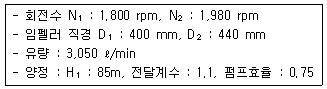
- 61,98
- 70.74
- 80.74
- 90.74
(정답률: 21%)